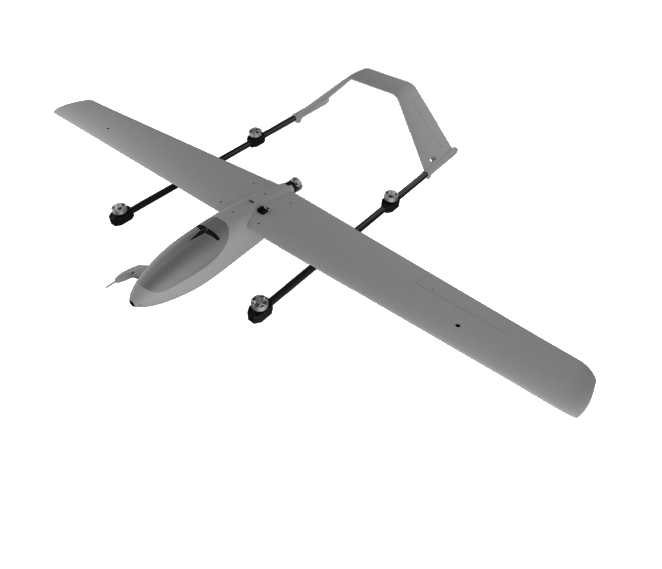

Öncülük
Trakya bölgesinde savunma teknolojilerinde referans ekip olma hedefi.
Otonom • VTOL Hibrit • SİHA
Teknofest kapsamında geliştirilen TULPAR; dikey kalkış/iniş kabiliyetini sabit kanat uçuş verimliliğiyle birleştirir. Modüler ve dağıtık mimarisiyle otonom görev yönetimi, görüntü tabanlı algılama ve güvenlik öncelikli uçuş yaklaşımı sunar.

Çorlu ve Trakya bölgesinde savunma teknolojileri alanında referans gösterilen öncü bir öğrenci takımı olmak. Sadece Teknofest’te değil, ilerleyen yıllarda uluslararası yarışmalarda Türkiye’yi temsil etmek; tasarlanan teknolojilerle patent başvuruları yapmak ve üretilen katma değeri en üst seviyeye taşımak. Uzun vadede mezunlarımızdan oluşan bir network ile sektörde söz sahibi olacak bir ekosistemin temelini atmak.
Trakya bölgesinde savunma teknolojilerinde referans ekip olma hedefi.
Benzer yarışmalarda Türkiye’yi temsil edecek teknoloji üretimi.
TULPAR projesi; tasarım, elektronik, yazılım ve mekanik birimleriyle disiplinler arası geliştirilir.
Yusuf Yedikardeşler
Remzi Sezer
Emre Konçe
Zülal Kurt
İ. Halil Yumurtacı
Barış Özkır
Burak Koç
Aysun Öney
Tuğba Köse
Esma Nur Ergon
Bahar Naz Oktay
Amine Ertekin
Fulya Ayçetin
Yuşa Gökkaya
Necla İdil Eser
Burak Koç
Abdullah Kurtoğlu
Takımımız yarışmaya Make Fly Easy Hero VTOL cihazı ile katılmaktadır. 2.18 m kanat açıklığına sahip TULPAR SİHA; dikey kalkış/iniş kabiliyeti ile sabit kanat uçuş verimliliğini bir arada sunar. EPO, karbon fiber, alüminyum ve mühendislik plastiklerinden oluşan gövde yapısı hafiflik ve dayanıklılığı birlikte sağlar. Aerodinamik tasarım sayesinde düşük sürüklenme ve yüksek kaldırma kuvveti ile uzun süreli görev icrası hedeflenir.
Pist ihtiyacını azaltır; sınırlı alanlarda operasyon kabiliyeti sağlar.
Geçiş sonrası aerodinamik kaldırma ile enerji verimliliği ve menzil avantajı.
Kompozit/plastik birleşimi ile hafif ve sağlam yapı.
Sunumdaki değerler birebir yerleştirildi.
TULPAR; itki-güç dağıtımı, otopilot, yer kontrol, görüntüleme ve haberleşme bileşenleriyle entegre bir sistem yaklaşımı sunar.
VTOL Sistemi
Seyir (Cruise) Sistemi
Toplam yaklaşık 22 kg itki üretilerek kalkış ve geçiş aşamalarında yüksek güç marjı hedeflenir.
Yüksek kapasite ile otopilot, ESC ve görüntü işleme sistemlerinin kesintisiz beslenmesi hedeflenir.
Sistem tasarımında yaklaşık 30 dakika uçuş süresi hedeflenmiştir.
Gerçekleştirilen görevler: otonom kalkış, seyir, hedef kilitlenme, otonom iniş.
QGroundControl: uçuş öncesi kalibrasyon, parametre ayarı ve test süreçleri.
Nesne tespiti kamera seviyesinde yapılarak görev bilgisayarının işlem yükü azaltılır.
Sistem iki gömülü bilgisayar üzerine dağıtılmıştır:
Elde edilen veriler gerektiğinde yer istasyonuna aktarılır.
Rakip hava aracı takibi:
Uçuş güvenliği:
Otopilot, görev bilgisayarı ve yer kontrol istasyonu arasında MAVLink temelli telemetri; ağ tarafında ise sahaya uygun RF/ethernet altyapıları ile güvenli veri akışı hedeflenir.
RFD868x üzerinden MAVLink telemetrisi alınır, arayüzde görüntülenir ve kayıt edilir.
Ubiquiti + ağ yönlendiricisi ile yer istasyonuna aktarım senaryoları desteklenir.
Geofence, fail-safe ve dinamik rota planlama ile güvenli operasyon yaklaşımı.
Proje kapsamında VTOL platform üzerine kurulu, görüntü tabanlı algılama ve durum algoritmaları ile otonom görev icra edebilen entegre bir sistem geliştirilmektedir. Dağıtık karar mimarisi sayesinde sistem ölçeklenebilir ve güvenli bir operasyon kabiliyeti hedefler.